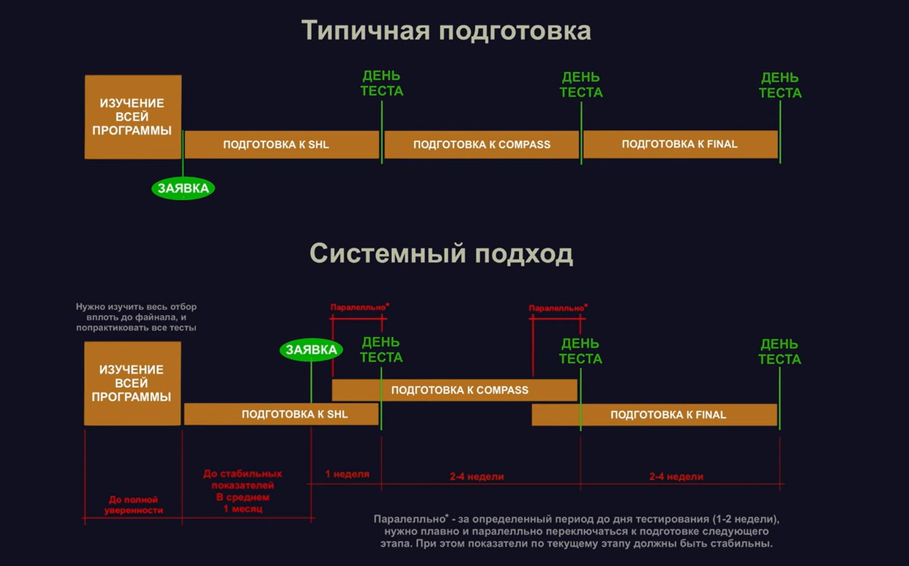
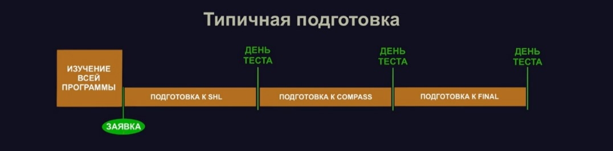
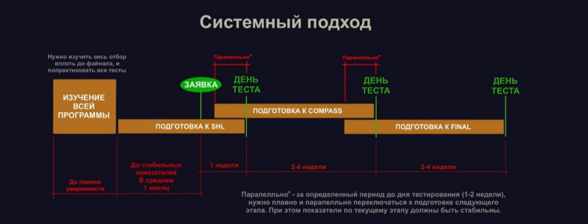

Jokhar Yunussov - Ab-initio candidate and future pilot of Air astana.Now he is
studying at AFTA (Irland).And he is professional artist
STRATEGY

WE HAVE 2 TYPES OF PREPERATION STRATEGY
COMMON PREPERATION

First one is common preperation,and Jokhar thinks that this strategy is inefficient.Cause with this strategy is hard to adapt for next stage if you pass previos stage
SYSTEM OPPROACH
